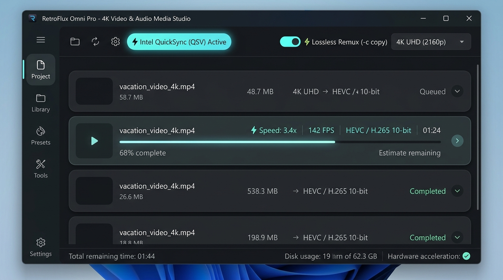
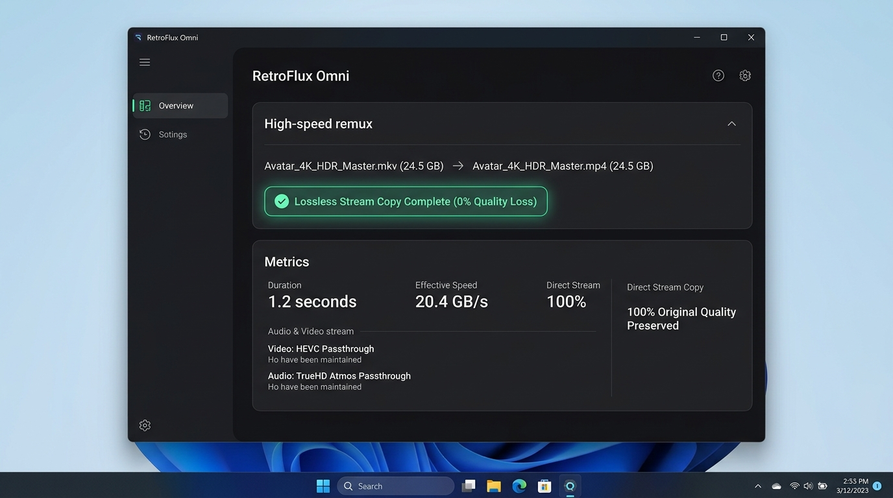

Transcode massive 4K HDR footage at up to 250 FPS using hardware GPU silicon. Swap containers in 1 second with lossless remuxing. 100% private, zero cloud dependence.
irm https://raw.githubusercontent.com/bonnokush/RetroFlux-Omni/main/install.ps1 | iex

Direct GPU execution eliminates CPU bottlenecks. Real-world benchmark performance when transcoding 4K HDR master files.
Intel QuickSync, NVIDIA NVENC & AMD AMF silicon
Instant container swap for a 20 GB 4K video file
GPU offloading keeps your PC responsive
| Conversion Scenario | ⚡ RetroFlux Omni PRO | HandBrake (CPU Mode) | Cloud Web Converters |
|---|---|---|---|
| 20 GB 4K MKV → MP4 (Lossless Remux) | 1.2 seconds (-c copy) | 8m 45s (Forced re-encode) | Upload failed (>2 GB limit) |
| 4K 60FPS Video Transcode to HEVC | 185 FPS (Hardware GPU) | 22 FPS (100% CPU lock) | 25+ mins (Queue delay) |
| 4K Video to Hi-Fi 320k MP3 Audio | Instant extract (< 2s) | ~ 45 seconds | 3–5 minutes |
| Offline Air-Gap & Privacy | 100% Local (Zero uploads) | 100% Local | Files stored on remote servers |
Engineered with precision for video editors, streamers, and media professionals.
Support for next-gen codecs: AV1, HEVC/H.265, and universal H.264. Scale footage to 4K UHD, 1440p, or 1080p with zero blur or compression banding.
Swap container formats from MKV, MOV, TS, and WebM to MP4 instantly. Stream copy keeps 100% of the original video and audio bitstreams intact.
Extract pure studio audio tracks: 320 kbps MP3, lossless FLAC, uncompressed WAV, studio AAC, and voice-optimized Opus.
Background Dart isolate pools compress and convert hundreds of PNG, JPG, and WebP images simultaneously without UI lag.
Your footage never touches the internet. Zero tracking, zero telemetry, and permanent offline access.
Dynamic Material 3 tonal surface tokens, Google Product Sans typography, and custom high-chroma seeds for a gorgeous Windows experience.
Clean, intuitive desktop ergonomics with dark-mode glass styling.
Live tracking of transcoding speed, FPS rate, and active silicon encoder.

Bitstream stream copy swaps MKV/MOV to MP4 instantly with 0% CPU strain.
No recurring subscriptions. Buy once, own it forever on all your Windows devices.
Official Native Windows MSIX Edition